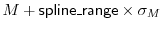
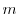

This command calculates and selects new restraints that are a spline approximation of the selected restraints of the specified type. The type is specified by form (see Section 5.3.1), feature (Section 5.3.1) and group (Table 6.1). It unselects the approximated restraints.
The restraint is approximated in a certain range only, determined differently for different mathematical forms. For example, the poly-Gaussian range is from to  , where  andare the minimal and maximal means of the basis pdfs, and and are their corresponding standard deviations.
The spline points are distributed evenly over this range with an interval of spline_dx. spline_dx should be equal to the scale of the peaks of the restraint that you want to approximate reliably. The value of the restraint beyond the range is determined by linear extrapolation using the first derivatives at the bounds.
If the x-range and spline_dx are such that the number of spline points would be less than spline_min_points, spline_dx is decreased so that there are spline_min_points defining the ``splined'' restraint.
If output is set to 'SPLINE', then tables are also written out comparing each pair of original and splined restraints.
Example: See Restraints.make() command.